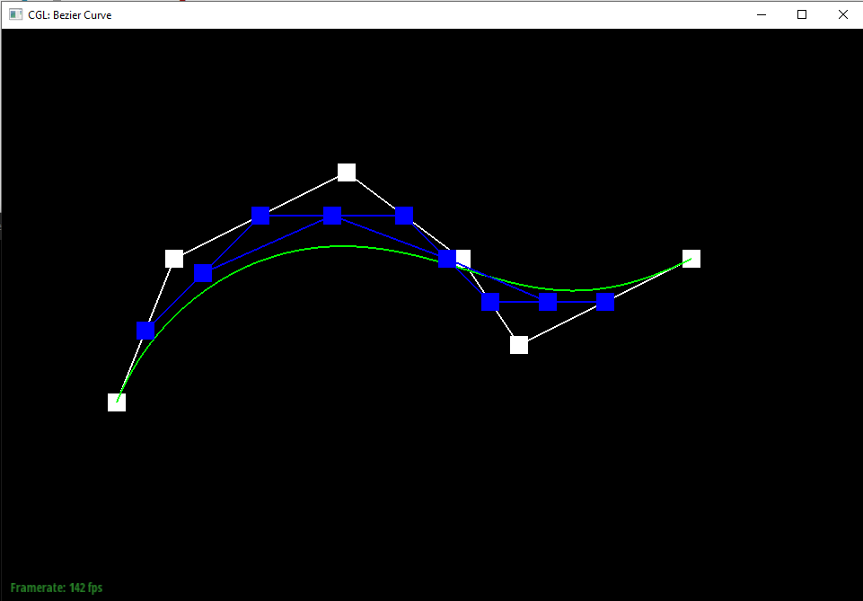
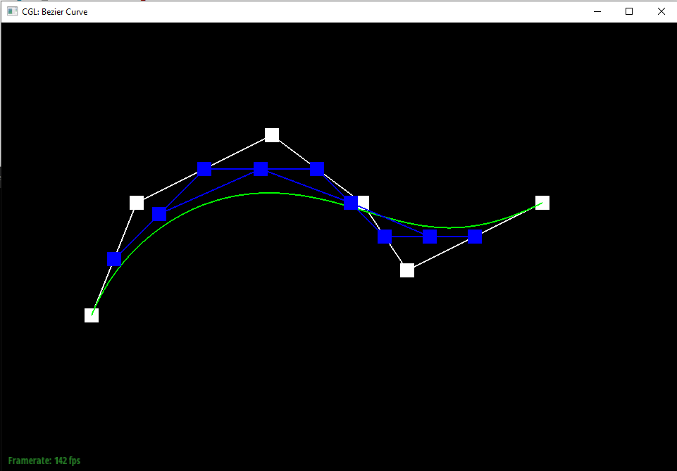

Overview:
Task 1:
The De Casteljau algorithm linearly interpolates the points between the points given as input to the algorithm. It continually repeats this process on the newly created
points. Once down to the final point, the algorithm has defined a point on the Bezier curve. I implemented the algorithm by multiplying the coordinates of the first of the pair
of coordinates by 1 - t and adding it to the coordinates of the second point multiplied by t.

 



Task 2:
Essentially, Bezier points along one axis can be grouped together along the other axis and linearly interpolated using the same algorithm to get points that
lie on the Bezier curves of both axes, providing a curve for the entire surface.

Task 3:
The area weighted vertex normals was calculated by taking the cross product of two of the edges in each of the attached faces of the vertex and summing them up.
The cross product provides the normal vector, and since we're using the edges of the triangle, their lengths are being accounted for in the cross product effectively
weighting the normals by the areas of the triangles.
Flat shading

Phong shading

Task 4:
At a very high level, implementing the edge flip involved methodically going through every element in the two triangles (vertices, faces, edges) and updating
their pointers in order for it to match the expected flip. I didn't do anything particularly special other than following the provided step order. The only thing
that wasn't just correct pointer assignment that I did was storing a reference to two particular halfedges that would be needed in a later pointer assignment but would
be lost while doing pointer assignments before reaching that point. The check_for() function was also very useful, as it helped when I ran into a weird bug where my
program was infinitely stalling, which threw me off since there shouldn't have been any loops in the program. What I found out was that I was assigning two halfedges'
next elements to each other on accident because I set them to a sequence of halfedge->next()->next() pointers expecting them to represent certain halfedges. However,
I didn't realize that I was changing halfedge->next()->next() earlier, so they ended up representing halfedges different than what I intended.
Preflip teapot:

Postflips teapot:

Task 5:
This task was almost identical to the previous task except with slightly more bookkeeping because of the need to create new elements. My implementation basically boils
down to going through every element and changing them to match with the expected outcome. I followed the image of the split triangle provided in the spec from the new vertex
m and just traced through it in my head dozens of times while doing the pointer assignments to get the right element assignments. Debugging was the same was for task 4, but
I didn't make any major errors in my first implementation so debugging was simpler. The only issue I had was splitting would result in correctly appearing edges, but the face
would disappear. It ended up just being a copy and paste of a previous halfedge assignment that I forgot to change properly.
Extra Credit:
For extra credit, I also implemented support for splitting on boundary edges. My implementation was very simple; if the input edge's halfedge was a boundary edge,
I ignored changing or adding any element that would lie in halfedge's triangle (which would lie in the boundary) and vice versa for if halfedge's twin was a boundary edge.
In practice though, halfedge ended up never being a boundary edge in any of my tests. I could kind of reason why this makes sense in my head, but just in case I kept the
case for halfedge being a boundary edge in.
Presplits teapot:
Postsplits teapot:
Presplits and flips cow:

Postsplits and flips cowt:
Extra Credit: Presplits and flips beetle boundary:

Extra Credit: Postsplits and flips beetle boundary:

Task 6:
I implemented loop subdivision following the steps outlined in the spec. First, I iterated over all the vertices in the mesh. Then, for each vertex, I calculate the
the position of the vertex after this current loop subdivision step. This position is calculated dependent on the number of adjacent vertices to the current vertex,
with the formula provided to us here and in lecture. Essentially though, we get a weighted average of the positions of the nearby vertices, including the current one
being operated on, with the weights depending on the formula. The new position is then stored in the current vertex's newPosition variable. This step also sets all
vertices' isNew flag to false for if this is a repeated loop subdivision and there are previously new vertices that are no longer new. After that step, it iterates
through each of the edges in the mesh and similarly calculates the new position in a way similar to previous step. However, this new position is for the vertex that will
be created after the current edge is split, and the edge is storing that position to assign to the new vertex when the splitting step is reached. Of note is that since these
positions are being calculated for the edge split, we know that we will always be calculating a weighted average of 4 adjacent points (except if it's a boundary edge).
Following that step, it iterates through all the edges again, this time splitting every edge and updating the new vertices with the positions calculated and store in the
previous step. In order to not loop infinitely, the loop checks that neither of the vertices of the current edge are a new edge, as that would imply it was an edge that was
created during this subdivision. Also, in preparation for the next step, this loop also labels the newly created edges (that don't include the old edge that was split into two)
so that their isNew value is true. After that, one more iteration through the edges is done, checking every edge where isNew is true, flipping every edge that has only one "new"
vertex, and also setting that edge's isNew to false. Finally, all the vertices have their positions set to the newPosition that was calculated and stored in step 1.
After loop subdivision, sharp corners and edges become smoothened and much rounder. Conceptually this makes sense, as this algorithm is basically approximating each of the
points with the surrounding points, so protruding vectors will be brought down to a more equal level. If you want to avoid this, you can presplit edges around the corner or
edge that you want to keep sharp. By increasing the number of sample vertices centered around that point, the sharpness is maintained.
Torus pre loop subdivision:
Torus post loop subdivision. Very round and smooth:

Torus pre loop subdivision with many splits at the top:
Torus with splits post loop subdivision. Top part with splits is noticeabley more sharp, similar to original shape:

When doing iterations of loop subdivision on the cube, the cube becomes asymmetric because the triangles that make up the cube originally do not have an even distribution.
The existing edges on the face of the cube can be flipped to make a mirrored image between two halves of the cube which results in a symmetric object when subdividing.
Post loop subdivision:
Alternatively, the edges can be split to make every face of the cube have 4 equal triangles making them up. This results in a smooth cube shape after loop subdivision.
Post loop subdivision:
Extra Credit:
I added support for loop subdivision on meshes with boundaries. I used http://www.cs.cmu.edu/afs/cs/academic/class/15462-s14/www/lec_slides/Subdivision.pdf as a source
for finding the formula to use to calculate the new position of vertices on a boundary. These end up being 1/2 of the position of the two adjacent vertices that are on
the same boundary as the current vertex when creating a new vertex with edge splitting. For old vertices being updated, the formula is 3/4 the current position + 1/8 of
the adjacent vertices that are on the same boundary. This is implemented relatively simply into the algorithm, with a checks on the vertices and edges when calculating the
new positions to see whether the elements lie on a boundary or not. If they do, we use the new formulas to calculate the positions, and if not, we use the old formulas as in
the original implementation. One thing to note though is that in my first attempt at this, for calculating the position of an old vertex that was on a boundary, I iterated
through all vertices that were adjacent to that vertex, and if they were on a boundary, I added their positions to the sum of neighbor positions. This implementation broke
under the edge case where the vertex was adjacent to another vertex that was on a boundary, but not the same boundary as the initial vertex. To get around this, I changed the
check to be that I only add an adjacent vertex's position to the sum if that adjacent vertex's edge connecting it to the intial vertex is also on a boundary, which would imply
the two vertices are on the same boundary.
Mesh example that has boundaries:
Performing loop subdivision without boundary handling:
Performing loop subdivision with boundary handling:
Performing second loop subdivision with boundary handling:

https://cal-cs184-student.github.io/sp22-project-webpages-ReplicaC/proj2/index.html